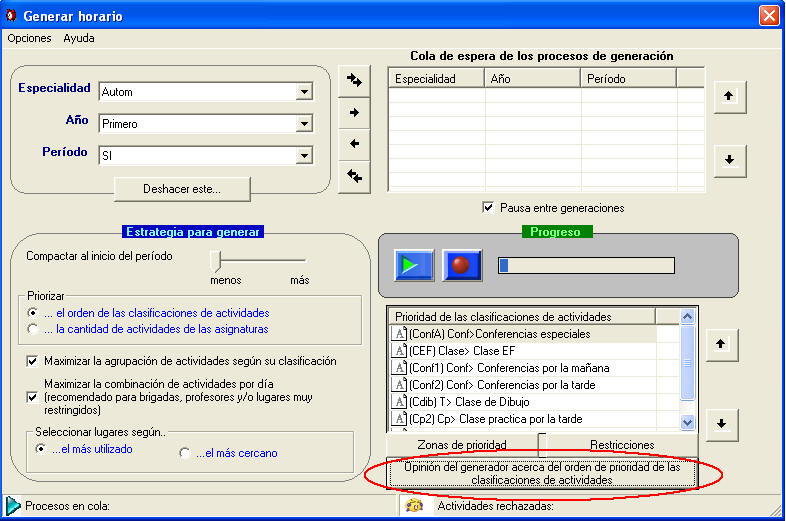
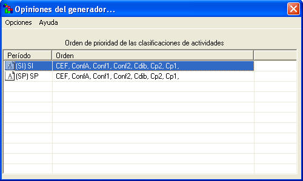

|
Opinión del generador acerca del orden de prioridad de las clasificaciones de actividades |
Uno de los principales parámetros para generar horarios, es el orden de las clasificaciones de actividades. El sistema genera los horarios en dependencia de este orden. Muchas veces no se sabe que orden tomar, otras el orden es elemental para el usuario. No obstante el sistema posee una herramienta que le brinda su opinión acerca de este orden, de modo que si lo hace pueden quedar los horarios mucho más óptimo.
Hay que tener en cuenta además que el orden es por períodos, pues los parámetros para determinar dicho orden difieren de un período en otro. Estos parámetro son:
Zonas de prioridad
Restricciones
Cantidad de turnos
¿Cómo mostrar la opinión del generador?
Seleccione la opción correspondiente en la Ventana de generación.

Aparecerá la siguiente ventana:
